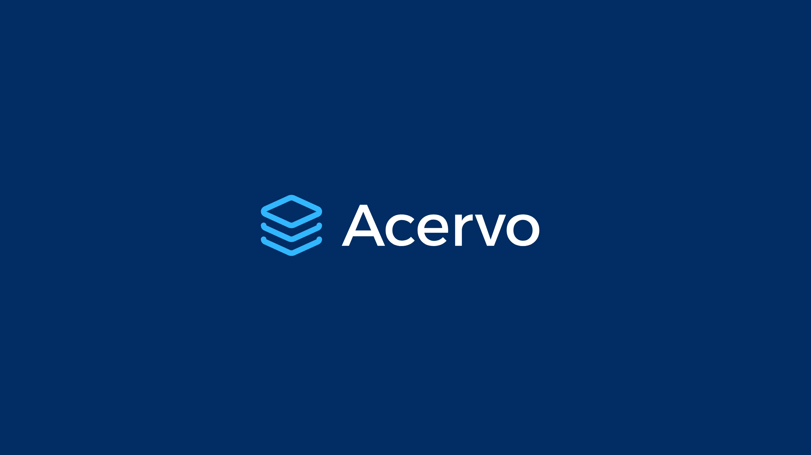
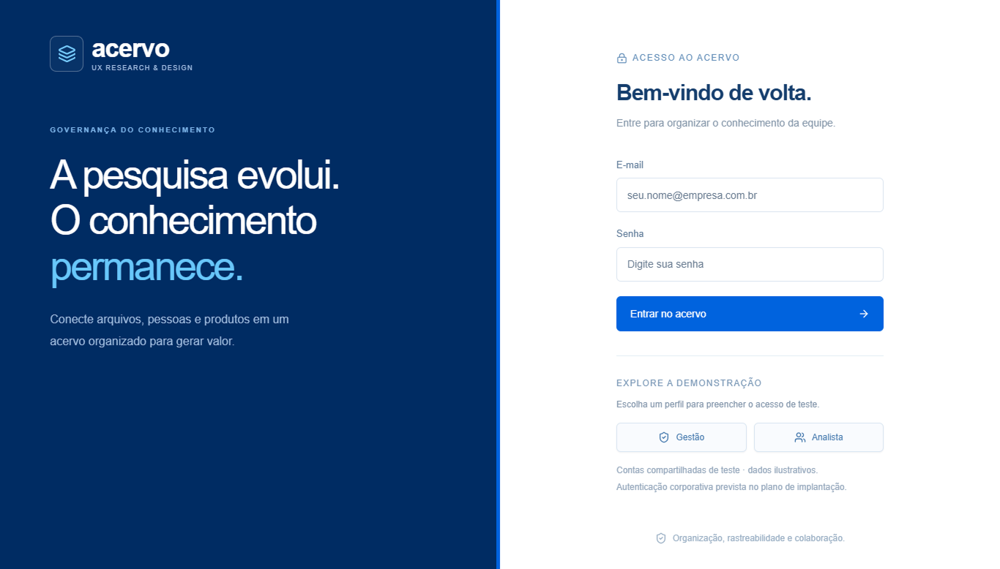

Acervo
Como fazer uma pesquisa continuar útil depois que seu arquivo é salvo: um acervo que conecta localização, responsabilidade e contexto, com governança, rede de relações e análise de evidências com IA.



Acervo — a marca do produto.
Contexto
Pesquisas de UX/UI produzem documentos, apresentações, planilhas e links distribuídos entre diferentes ferramentas. Cada arquivo pode guardar conhecimento relevante, mas sua existência não garante que outra pessoa consiga encontrá-lo, compreender seu contexto ou reutilizá-lo.
O Acervo nasceu da intenção de organizar esse conhecimento a partir de uma estrutura de negócio: portfólio, cadeia de valor ou serviço, produto ou serviço. O ponto de partida foi um inventário de arquivos; ao longo da construção, o escopo incorporou governança, visualização de relações e análise de evidências com IA.
Minha atuação conectou a definição do produto à construção da solução, traduzindo necessidades em modelos de informação, fluxos e regras de funcionamento.
- Setor
- Pesquisa em UX · gestão do conhecimento
- Estrutura
- Portfólio · cadeia de valor ou serviço · produto ou serviço
- Escopo
- Inventário, governança, rede de relações e análise de evidências com IA
- Meu papel
- Definição do produto · modelos de informação · fluxos e regras de funcionamento
Problema
Como fazer uma pesquisa continuar útil depois que seu arquivo é salvo?
Um inventário informa o que existe, mas pode deixar perguntas importantes sem resposta: quem responde pelo documento? A qual produto ele pertence? Seu conteúdo ainda é relevante? Que outras pesquisas ajudam a interpretar o mesmo problema?
O desafio definido para o Acervo foi conectar localização, responsabilidade e contexto. A organização dos arquivos precisava apoiar tanto a manutenção do repositório quanto a recuperação de conhecimento.
Essa formulação orientou o desenvolvimento. A frequência dessas dificuldades e seus custos para equipes reais ainda precisam ser investigados em campo.
Pergunta de pesquisa
Questão central
Como podemos ajudar equipes a encontrar, contextualizar e relacionar evidências de pesquisa para apoiar decisões de produto e serviço?
- Q.01Encontrar: quais informações tornam uma pesquisa reconhecível e recuperável?
- Q.02Governar: como distribuir responsabilidades e manter uma classificação consistente?
- Q.03Relacionar: como revelar conexões entre documentos de diferentes produtos e responsáveis?
- Q.04Interpretar: como usar IA para sintetizar conteúdos sem perder a ligação com as evidências?
Essas perguntas constituem a agenda de investigação do produto. Orientaram escolhas de implementação, mas ainda não foram respondidas por uma pesquisa formal com participantes.
Partes interessadas
O enquadramento do produto considera três grupos principais.
| Grupo | Necessidade considerada |
|---|---|
| Analistas e pesquisadores | Cadastrar, localizar e reutilizar pesquisas com contexto suficiente. |
| Gestão de pesquisa e design | Acompanhar contribuições, responsabilidades e qualidade da organização. |
| Equipes de produto e serviço | Consultar evidências relacionadas às decisões de seu domínio. |
As permissões implementadas distinguem gestão e analista. O terceiro grupo representa um consumidor potencial do conhecimento, sem um perfil de acesso próprio nesta versão.
Esses grupos foram definidos a partir do propósito da solução; não representam personas validadas por entrevistas.
Metodologia
A construção seguiu um processo iterativo: definir a estrutura, materializar os fluxos, revisar o funcionamento e ajustar a solução a partir das questões surgidas durante o desenvolvimento.
- 01
Enquadrar - 02
Estruturar - 03
Projetar - 04
Construir - 05
Revisar
| Etapa | Trabalho realizado | Finalidade |
|---|---|---|
| Enquadrar | Definição do problema e dos metadados | Delimitar o papel do produto. |
| Estruturar | Modelagem da taxonomia e dos responsáveis | Conectar documentos ao negócio. |
| Projetar | Fluxos de cadastro, configuração e conciliação | Organizar as tarefas principais. |
| Construir | Implementação com apoio de IA | Transformar decisões em uma aplicação funcional. |
| Revisar | Ajustes de navegação, visualização e integração | Resolver problemas identificados na construção. |
A revisão técnica e as iterações de interface não equivalem a testes de usabilidade. A validação com usuários permanece como próxima etapa.
Pesquisa
Números da pesquisa
50
Documentos fictícios na base demonstrativa
2
Níveis de acesso
3
Níveis hierárquicos de contexto
A investigação disponível nesta fase foi orientada à estrutura da informação e ao comportamento da solução: quais campos registrar, como representar a hierarquia de negócio e que conteúdo é necessário para uma análise documental.
Ainda faltam observações sobre como as pessoas procuram documentos, classificam pesquisas que atravessam diferentes produtos e avaliam a utilidade das sínteses. Essa investigação será necessária para testar as hipóteses de interação e governança.
A base demonstrativa reúne 50 documentos fictícios, preparados para exercitar importação e análise. Esses números descrevem o escopo construído, não uma amostra de pesquisa.
Evidências
As evidências desta etapa são artefatos de implementação e decisões registradas durante a construção.
| Código | Evidência disponível | O que demonstra |
|---|---|---|
| E.01 | Cadastro com responsável, formato, data e hierarquia | O documento recebe contexto além do nome. |
| E.02 | Seletores vinculados à taxonomia cadastrada | A classificação utiliza opções compartilhadas. |
| E.03 | Bloqueios de exclusão por dependência | A manutenção considera os registros associados. |
| E.04 | Rede conectada aos filtros do catálogo | Os documentos podem ser explorados por relações. |
| E.05 | Seleção documental antes da análise | O usuário delimita o material enviado à IA. |
| E.06 | Citações verificadas e cobertura documental calculada | A síntese mantém referências ao material analisado. |
Essas evidências demonstram capacidades implementadas. Não comprovam facilidade de uso, adoção ou melhoria nas decisões.
Descobertas
- I.01
A classificação também é uma decisão de governança.
Uma hierarquia compartilhada depende de opções consistentes e regras para manutenção. Isso orientou os seletores em cascata e os bloqueios por dependência.
Base · E.02 · E.03
- I.02
Encontrar um arquivo e interpretar seu conteúdo são tarefas diferentes.
Metadados apoiam localização; sínteses exigem texto disponível e contexto. Essa distinção orientou a separação entre catálogo e análise.
Base · E.01 · E.05
- I.03
O percentual precisa explicar o que mede.
Na análise, a adesão representa cobertura entre documentos analisados, não certeza da conclusão ou prevalência entre pessoas.
Base · E.06
São aprendizados da construção e hipóteses de produto, ainda sujeitos à validação em uso.
Jornada / Ecossistema
A jornada proposta começa na origem do documento e termina na revisão de uma interpretação.
| Momento | Ação do usuário | Apoio do Acervo |
|---|---|---|
| Conectar | Escolher uma origem e informar os dados necessários | Fluxo orientado por ferramenta. |
| Selecionar | Examinar os arquivos disponíveis | Conciliação e seleção do material. |
| Contextualizar | Associar documentos ao negócio | Responsável e taxonomia compartilhada. |
| Explorar | Procurar registros e relações | Catálogo, filtros e rede de conhecimento. |
| Analisar | Formular uma pergunta sobre os conteúdos | Sínteses com referências documentais. |
| Revisar | Conferir evidências e interpretações | Citações e explicação da cobertura. |
O ecossistema aproxima ferramentas de origem, catálogo e serviço de IA. A disponibilidade de conteúdo depende da integração utilizada; listar um arquivo não significa conseguir ler seu conteúdo.
Esta é uma jornada projetada, sem curva de esforço medida.
Oportunidades
As decisões implementadas abriram novas perguntas para evolução.
- O.01 · I.01
Qualidade do acervo: como identificar registros sem responsável, classificação incompleta ou necessidade de revisão?
- O.02 · I.02
Recuperação: como aproximar a busca da linguagem usada por quem precisa de uma evidência?
- O.03 · I.02
Conteúdo: como ampliar a leitura dos documentos sem perder origem, versão e permissões?
- O.04 · I.03
Interpretação: como ajudar o usuário a distinguir recorrência documental, contradição e hipótese?
- O.05 · I.03
Decisão: como registrar o que foi decidido a partir de um insight e acompanhar seu uso?
Essas oportunidades compõem uma agenda de evolução, não funcionalidades já entregues.
Impacto
O resultado demonstrável desta etapa é uma aplicação funcional que reúne organização, governança e exploração documental em uma mesma experiência.
Ainda não há dados suficientes para afirmar redução de tempo, aumento de reutilização ou melhoria na qualidade das decisões.
| Impacto esperado | Como avaliar |
|---|---|
| Encontrar evidências com menos esforço | Tempo e sucesso em tarefas de localização. |
| Melhorar a organização | Proporção de registros com contexto completo e válido. |
| Reutilizar pesquisas | Evidências existentes citadas em novos trabalhos. |
| Apoiar interpretações rastreáveis | Sínteses revisadas com citações pertinentes. |
A avaliação deverá comparar o fluxo atual das equipes com o uso do Acervo, começando por uma linha de base.
Entregáveis
- ENT.01
Aplicação funcional
Catálogo de documentos, visão geral, filtros e rede de conhecimento para explorar o acervo.
- ENT.02
Estrutura de governança
Perfis de gestão e analista, cadastro de responsáveis, taxonomia hierárquica e regras de dependência.
- ENT.03
Fluxo de Insights
Escolha da origem, configuração, seleção documental e análise com apoio de IA, conforme os limites de cada integração.
- ENT.04
Material para continuidade
Código publicado no GitHub, README com instalação e uso e CSV demonstrativo com 50 documentos fictícios.
Os entregáveis tornam a proposta examinável e permitem continuar o desenvolvimento. Sua disponibilidade não representa validação em contexto corporativo.
Recomendação
A próxima etapa recomendada é um piloto com escopo delimitado: uma equipe, um conjunto autorizado de pesquisas e tarefas representativas do trabalho cotidiano.
| Frente | Próxima ação | Critério de avaliação |
|---|---|---|
| Encontrabilidade | Observar buscas por evidências específicas | Sucesso, tempo e dificuldades. |
| Classificação | Testar o cadastro de pesquisas de diferentes contextos | Dúvidas, inconsistências e retrabalho. |
| Análise | Revisar sínteses com pesquisadores | Pertinência das citações e interpretações. |
| Governança | Definir responsáveis e rotina de manutenção | Cumprimento e clareza das responsabilidades. |
Antes de incluir dados corporativos, será necessário adequar autenticação, proteção de credenciais e permissões documentais. O piloto deve testar o valor do fluxo completo antes de ampliar a quantidade de integrações.
Aprendizados
O que aprendi
Organizar pesquisas exige mais do que reunir arquivos. O conhecimento se torna reutilizável quando contexto, responsabilidade e evidência permanecem conectados. A construção também mostrou que uma interface de IA precisa explicar a origem de suas respostas e o significado de seus indicadores.
O que levo adiante
Construir com IA encurta a distância entre uma ideia e uma solução examinável, mas não substitui a investigação com usuários. Meu próximo passo é observar o Acervo em tarefas reais e usar essas evidências para decidir o que simplificar, aprofundar ou deixar de desenvolver.